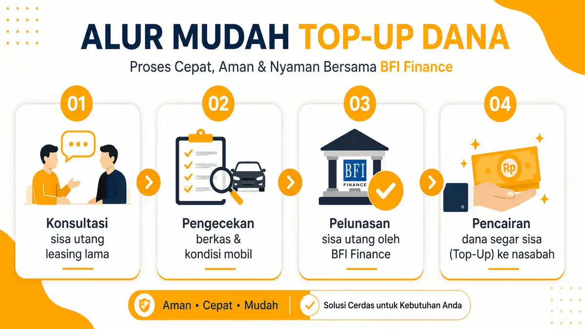

Banyak pemilik kendaraan roda empat yang berada dalam situasi dilematis: mobil masih dalam status kredit di leasing lama, tetapi di sisi lain sedang membutuhkan dana darurat dalam jumlah besar, atau merasa terbebani dengan suku bunga angsuran berjalan yang terlalu tinggi.
Jika Anda mengalami hal ini, solusi legal dan paling aman yang bisa Anda ambil adalah melakukan take over kredit mobil resmi. Melalui fasilitas ini, sisa utang Anda di leasing lama akan dilunasi, dan Anda bisa mendapatkan kontrak baru yang jauh lebih menguntungkan di leasing baru.
Mari kita bahas secara mendalam langkah demi langkah melakukan proses pindah leasing ke bfi finance agar pengajuan Anda langsung disetujui tanpa kendala bbirokrasi.
Apa Itu Fasilitas Take Over Resmi?
Fasilitas ini adalah proses pemindahan kontrak pembiayaan unit kendaraan dari satu lembaga keuangan (bank/leasing) ke lembaga keuangan lainnya secara legal. Keuntungan utamanya meliputi:
- Mendapatkan Dana Segar (Top Up): Jika nilai taksiran mobil Anda saat ini jauh lebih tinggi daripada sisa utang di leasing lama, Anda berhak mencairkan kelebihan dana tersebut tunai ke rekening Anda.
- Restrukturisasi Angsuran: Anda bisa mengatur ulang masa tenor (jangka waktu) cicilan agar nominal pembayaran bulanan menjadi jauh lebih ringan dan sesuai kemampuan kantong saat ini.
Alur Cara Take Over BFI Finance Langkah Demi Langkah
Proses pemindahan ini sebenarnya sangat mudah asalkan dilakukan melalui jalur institusi resmi, bukan lewat perantara perorangan (bawah tangan) yang berisiko pidana.
Cek Sisa Pokok Utang: Hubungi pihak leasing tempat Anda mencicil saat ini, lalu mintalah data print out riwayat angsuran beserta sisa total pokok utang (*Outstanding*).
Simulasi Taksiran di BFI: Hubungi marketing kami melalui WhatsApp untuk menghitung nilai pasar mobil Anda. Kami akan mengalkulasikan apakah nilai mobil Anda cukup untuk melunasi utang lama sekaligus memberikan sisa dana tunai untuk Anda.
Penjemputan Berkas & Survei Unit: Surveyor resmi kami akan datang melakukan cek fisik nomor rangka mesin dan mengumpulkan berkas copy KTP, KK, PBB rumah, slip gaji, serta bukti bayar angsuran berjalan.
Pelunasan di Leasing Lama: Setelah komite kredit BFI mengeluarkan status *APPROVED*, tim internal BFI Finance yang akan berkoordinasi dan melakukan pelunasan sisa utang Anda langsung ke kantor leasing lama Anda untuk mengambil fisik BPKB asli.
Pencairan Sisa Dana: Setelah BPKB berada di tangan BFI secara aman, sisa dana hasil bersih pengurangan utang akan langsung ditransfer ke rekening tabungan Anda di hari yang sama.

Syarat Penting Agar Pengajuan Lolos Analis Kredit
Agar proses pemindahan kontrak pembiayaan berjalan mulus dalam waktu kurang dari 48 jam, pastikan Anda memenuhi kriteria wajib berikut:
1. Rekam Jejak Angsuran Bagus: Pastikan riwayat pembayaran cicilan di leasing lama Anda tidak hancur (minimal tidak pernah menunggak lebih dari 30 hari secara berturut-turut dalam 6 bulan terakhir).
2. Masa Kredit Berjalan: Umumnya, proses pemindahan ini akan sangat menguntungkan jika masa kredit di leasing lama sudah berjalan minimal selama 12 bulan atau sisa utang sudah di bawah 70% dari harga jual mobil.
3. Dokumen Transparan: Jangan menyembunyikan data denda. Semakin transparan data riwayat bayar yang Anda tunjukkan, semakin cepat analis menyusun skema bunga murah untuk Anda.
Peringatan Hukum: Jangan pernah melakukan *over kredit* bawah tangan (menjual/memindahkan mobil kredit ke orang lain tanpa sepengetahuan pihak leasing resmi). Tindakan tersebut melanggar UU Jaminan Fidusia dan berisiko hukum berat. Lakukanlah selalu prosedur *take over* resmi antar perusahaan finansial resmi yang dilindungi hukum.
Kesimpulan
Pindah leasing ke BFI Finance merupakan solusi finansial cerdas untuk menyegarkan kembali arus kas keuangan Anda yang tersendat. Selain mendapatkan perlindungan hukum resmi dari OJK, Anda bisa memperpanjang napas usaha dengan cicilan baru yang jauh lebih bersahabat.